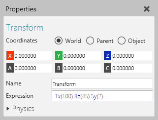
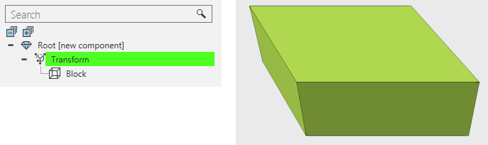

A Transform feature allows you to write expressions for transforming child features.

Transform operations use a dot (.) character to separate nested expressions, and you should refer to Operator Precedence to know the parsing order for the transformation.

| Name | Description |
| Name | Defines the name of the feature. |
| Visible | Turns on/off the visibility of its subfeatures. |
| Expression | Defines an expression (matrix) that when evaluated transforms child features. The given expression is evaluated based on the order of operations and operator precedence. |
| Physics | Defines a set of physics properties for the feature. |